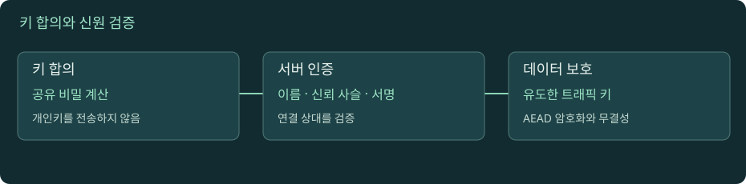

HTTPS와 TLS: 암호화보다 먼저 신뢰를 확인한다
브라우저에 자물쇠가 보이기까지, 두 장치가 같은 키를 만들고 상대의 이름을 검증하는 과정을 추적합니다. 공개키·인증서·세션 키를 구분하고 TLS 종료 위치를 직접 바꿔 봅니다.

TLS 1.3 핸드셰이크
자바스크립트를 켜면 실험을 조작할 수 있습니다. 아래 본문·도식·실습은 그대로 읽을 수 있습니다.
01. 1. HTTPS가 해결하는 세 가지 문제
카페 와이파이로 주문 API를 호출한다고 가정합니다. 평문 HTTP에서는 통신 경로의 관찰자가 주소뿐 아니라 요청 헤더와 본문을 읽거나 바꿀 수 있습니다. HTTPS는 HTTP를 TLS로 보호한 연결 위에 보냅니다. 여기서 목표는 기밀성(내용을 읽지 못하게), 무결성(변조를 발견하게), 상대 인증(원하는 서버와 연결했는지 확인하게)입니다. 세 목표는 서로 다릅니다. 공격자의 서버와 암호화 통신하는 것만으로는 내가 원한 서버에 접속했다는 사실이 보장되지 않습니다.
보호 범위도 구분해야 합니다. 연결 중인 HTTP 본문이 보호된다고 해서 단말의 악성 프로그램이나 서버의 로그 유출까지 막는 것은 아닙니다. 보통 목적지 IP, 통신 시점, 전송량 같은 메타데이터는 남습니다. HTTPS 사이트가 악성 상품을 판매할 수도 있습니다. 인증서 검증은 서비스의 정직성 전체를 심사하는 절차가 아닙니다. 이 장의 그림은 TLS 1.3의 일반적인 인증서 기반 연결을 교육용으로 단순화합니다. 현행 규격은 2026년 7월 RFC 8446을 대체한 RFC 9846이며 버전 이름은 여전히 TLS 1.3입니다.
02. 2. 키 합의, 전자서명, 본문 암호화는 서로 다른 일이다
공개키는 누구나 알아도 되는 값이고 개인키는 소유자가 비밀로 관리하는 값입니다. 하지만 현대 TLS를 “인증서의 공개키로 모든 HTTP 데이터를 암호화한다”라고 설명하면 실제 동작을 놓칩니다. 일반적인 TLS 1.3 연결에서 클라이언트와 서버는 임시 키 교환 값을 주고받고, 각자의 비밀값으로 같은 공유 비밀을 계산합니다. 그 재료와 핸드셰이크 기록에서 실제 통신에 쓸 여러 키를 유도합니다. 본문은 이 키를 사용하는 대칭 암호 방식으로 효율적으로 보호합니다.
인증서의 키는 서버의 신원을 연결 과정에 묶는 역할을 합니다. 서버는 개인키를 사용해 핸드셰이크 기록에 서명하고, 클라이언트는 인증서의 공개키로 그 서명을 확인합니다. 따라서 가짜 서버가 정상 인증서 파일만 복사해도 해당 개인키를 모르면 같은 증명을 만들 수 없습니다. 키 합의는 “같은 비밀을 만들기”, 서명은 “이 연결 상대가 키의 소유자인지 확인하기”, 대칭 암호는 “많은 데이터를 보호하기”로 나누어 생각하세요. 임시 키 교환은 나중에 인증서 개인키가 유출되어도 과거 세션을 바로 복호화하기 어렵게 하는 전방향 안전성의 기반입니다. 재개 방식에 따라 성질은 달라지므로 모든 연결에 같은 보장을 붙이지 않습니다.
03. 3. 첫 연결을 시간 순서로 따라간다
- 클라이언트가 ClientHello로 지원하는 TLS 버전과 암호 조합, 키 교환 값 등을 보냅니다.
- 서버가 ServerHello로 사용할 조합과 자신의 키 교환 값을 선택합니다. 양쪽은 이후 핸드셰이크 메시지를 보호할 키를 계산할 수 있습니다.
- 서버는 암호화된 확장 정보, 인증서, 서명 증명, Finished를 보냅니다. 클라이언트는 인증서와 서명을 확인하고 기록이 일치하는지 검증합니다.
- 클라이언트가 Finished를 보내고 애플리케이션 데이터를 교환합니다. 실제 구현은 송신 시점과 메시지 묶음을 최적화할 수 있습니다.
이 순서에서 “인증서가 있다”와 “인증서를 검증했다”는 서로 다른 상태입니다. 인증서 이름이 맞지 않으면 안전한 일반 클라이언트는 HTTP 요청으로 진행하지 않습니다. 또한 TLS 연결 하나가 성공했다고 모든 API 요청이 성공하는 것은 아닙니다. 그 다음에 HTTP 인증, 권한, 입력값, 서비스 처리 단계가 남습니다. 실험의 단계 버튼을 눌러 현재까지 알 수 있는 사실을 말해 보세요. ServerHello를 받았다는 사실만으로 최종 신뢰 검증까지 완료했다고 설명하면 안 됩니다. 핸드셰이크가 재시도되거나 HelloRetryRequest가 필요한 경로는 이 기본 그림보다 메시지가 추가됩니다.
04. 4. 인증서 검증은 이름·시간·체인·용도를 함께 본다
브라우저가 기대한 이름이 api.shop.test인데 서버 인증서가 admin.shop.test에만 유효하면, 같은 회사 소유라도 이름 검증은 실패합니다. DNS로 어떤 IP를 얻었는가와 TLS에서 어떤 이름을 검증하는가는 별개입니다. IP를 수동으로 지정해도 원래 호스트 이름으로 검증해야 합니다. 서비스 이름 검증의 기준은 RFC 9525 §6을 참고합니다. 교육 예시의 .test 도메인은 설명용이며 공개 인터넷의 실제 서버가 아닙니다.
인증서는 보통 서버 인증서에서 중간 인증기관을 거쳐 클라이언트가 신뢰하는 루트까지 이어집니다. 서버가 필요한 중간 인증서를 빠뜨리면 일부 클라이언트에서는 성공하고 다른 환경에서는 실패할 수 있습니다. 운영체제의 신뢰 저장소, 기업 프록시 인증서, 시스템 시계 차이가 결과를 바꿀 수도 있습니다. 만료일만 확인하고 종료하지 말고 이름, 유효기간, 체인, 용도와 정책을 함께 확인하세요. 서버가 보낸 인증서 목록이 곧 검증된 체인이라는 뜻도 아닙니다. 실무에서는 실패한 바로 그 클라이언트 환경의 검증 로그가 가장 직접적인 증거입니다.
05. 5. SNI와 ALPN: 같은 주소에서 어떤 서비스를 고를까
한 IP의 443 포트에서 여러 도메인을 서비스하면 서버는 HTTP Host 헤더를 읽기 전에 어떤 인증서를 제시할지 알아야 합니다. SNI는 연결할 서버 이름을 TLS 단계에서 전달하는 기능입니다. HTTPS 요청의 Host만 바꾸고 SNI를 그대로 두면 잘못된 인증서나 다른 가상 서버를 만날 수 있습니다. 이 때문에 IP 접속에 Host 헤더만 덧붙이는 실험은 정상 도메인 접속과 동등하지 않습니다. 일반적인 ClientHello의 이름 정보가 모두 항상 숨겨진다고 가정해서도 안 됩니다. ECH는 내부 ClientHello 보호를 위한 별도 기술이며 배포와 협상 조건이 있습니다. RFC 9849
ALPN은 “이 TLS 연결 위에서 어떤 애플리케이션 프로토콜을 쓸지” 합의합니다. 클라이언트가 HTTP/2와 HTTP/1.1을 지원해도 서버와 협상한 결과는 하나입니다. URL이 HTTPS라는 이유만으로 HTTP/2라고 단정할 수 없습니다. SNI는 어떤 이름의 서비스를 찾는가, ALPN은 그 연결에서 어떤 프로토콜을 사용하는가라는 서로 다른 질문에 답합니다. 리버스 프록시가 있다면 클라이언트 쪽과 업스트림 쪽에서 서로 다른 프로토콜을 사용할 수 있습니다. RFC 7301 §3
06. 6. 재개와 0-RTT는 지연과 재전송 위험을 함께 바꾼다
매번 완전한 인증 절차를 반복하면 연결 비용이 커집니다. 세션 재개는 이전 연결에서 마련한 재료를 활용해 새 연결을 설정하는 방식입니다. 브라우저가 이미 열어 둔 연결을 재사용하는 것과는 다릅니다. 연결 재사용은 기존 통로를 계속 쓰는 것이고, 재개는 새 통로를 더 효율적으로 만드는 것입니다. DNS 캐시, TCP 연결 재사용, TLS 재개를 모두 “캐시 덕분에 빠름”으로 묶으면 어느 단계에서 시간이 줄었는지 설명할 수 없습니다.
0-RTT early data는 재개 과정에서 서버의 새 응답을 기다리기 전에 일부 요청을 보낼 수 있게 합니다. 대신 공격자가 그 데이터를 다시 전달하는 재생 공격을 고려해야 합니다. 결제나 재고 차감 같은 요청은 같은 바이트가 한 번 더 실행되어도 괜찮은지 먼저 판단해야 합니다. GET이라는 메서드 이름만으로 애플리케이션의 실제 부작용까지 사라지는 것도 아닙니다. 시뮬레이터에서 빠른 경로가 보이더라도 모든 서비스에 0-RTT를 켜는 운영 권고로 해석하지 마세요. 이 교재에서는 원리를 설명하고, 실제 사용은 서버·클라이언트·애플리케이션의 재생 방어 계약을 별도로 확인합니다.
07. 7. TLS 종료 지점이 평문을 볼 수 있는 주체를 결정한다
브라우저 → 프록시 → 앱 구조에서 프록시가 인증서를 보유하고 TLS를 종료하면 프록시는 HTTP 헤더와 본문을 읽을 수 있습니다. 이때 브라우저의 HTTPS 연결 상대는 프록시입니다. 프록시 → 앱이 HTTP라면 그 구간은 별도로 보호되지 않은 평문입니다. 앱까지 다시 TLS를 연결하면 두 개의 보호된 연결이 생기지만 하나의 종단 간 연결이 되는 것은 아닙니다. 프록시는 여전히 중간에서 내용을 해석할 수 있습니다.
TLS 통과 방식에서는 중간 장치가 암호화된 연결을 앱까지 전달하고 앱이 종료합니다. 그러면 그 장치의 HTTP 경로별 라우팅이나 본문 검사 능력에 제약이 생깁니다. “HTTPS 사용”이라는 한 줄 대신, 인증서와 개인키를 누가 보유하는지, 어디서 복호화하는지, 업스트림 인증서를 누가 검증하는지, 클라이언트 인증을 어느 구간에 적용하는지 그려 보세요. 사설망이라는 이유로 자동 암호화되지는 않습니다. mTLS는 양쪽 인증서로 피어를 인증할 수 있지만 사용자별 업무 권한 검사까지 대신하지는 않습니다.
08. 8. TLS 오류를 HTTP 오류와 분리해서 읽는다
certificate has expired, 이름 불일치, 신뢰할 수 없는 발급자, TLS 버전 협상 실패는 HTTP 상태 코드보다 앞 단계에서 발생할 수 있습니다. 이런 상황에서는 서버 애플리케이션의 500 로그가 없어도 이상하지 않습니다. 반대로 401이나 403을 받았다면 적어도 그 응답을 보낸 HTTPS 종단과는 HTTP 메시지를 교환할 정도로 연결이 진행됐습니다. 단, 중간 프록시가 대신 만든 응답일 수 있으므로 실제 앱 실행까지 증명하지는 않습니다.
운영에서 인증서 검증을 끄면 일시적으로 통신이 되는 것처럼 보일 수 있지만, 상대 인증이 빠진 결과를 정상 연결의 증거로 삼으면 안 됩니다. 진단은 실패 이름과 시각, 접속 IP, SNI, 선택된 인증서, 검증 오류를 함께 기록하는 일입니다. 예를 들어 어떤 지역에서만 만료 인증서가 나온다면 “서비스 전체 인증서 교체 실패”보다 “그 지역의 종료 노드나 경로가 다른가”를 먼저 확인할 수 있습니다. 이는 가설이지 결론은 아닙니다. 같은 호스트라도 IPv4·IPv6 경로와 기업 프록시 개입 여부가 달라질 수 있습니다.
실습 · 인증서와 협상 결과를 따로 확인하기
인터넷 연결과 curl, openssl이 필요합니다. macOS 기본 도구는 LibreSSL일 수 있고 옵션 지원이 다릅니다. openssl version, openssl s_client -help, curl -V를 먼저 확인하세요. 아래 명령은 example.com의 현재 결과를 관찰하는 실험이며 인증서 발급자나 HTTP 버전이 고정이라고 가정하지 않습니다.
curl -vI https://example.com/을 실행합니다. 인증서 검증, 협상 프로토콜, HTTP 상태를 서로 다른 줄에서 찾습니다. 헤더 요청이 거절되어도 TLS 정보는 별도로 해석합니다.- 다음 명령으로 SNI, ALPN, 이름 검증을 명시합니다. 설치된 OpenSSL에서 지원하지 않는 옵션이면 해당 도움말을 확인하고 생략한 검증이 무엇인지 적습니다.
openssl s_client -connect example.com:443 -servername example.com -alpn h2,http/1.1 -verify_hostname example.com -verify_return_error < /dev/null- 선택된 ALPN, 인증서 주체와 발급자, 검증 결과를 기록합니다.
-servername만 지정하는 것은 이름 검증 옵션과 다릅니다. -showcerts를 추가해 서버가 보낸 체인 목록을 확인합니다. 로컬 신뢰 저장소에서 선택한 최종 경로와 항상 같지는 않습니다.- 지원되는 환경에서
-verify_hostname wrong.example로 기대 이름만 바꾸어 실패를 관찰합니다. 검증을 끄는 옵션은 사용하지 않습니다. 실제 서비스 이름과 기대 이름 중 어느 쪽이 바뀌었는지 설명합니다. - 그림의 TLS 종료 위치를 프록시/앱으로 바꿉니다. 각 경우 개인키 보유자와 HTTP 본문을 볼 수 있는 주체를 적습니다.
확인 질문: TLS 연결 성공과 HTTP 200은 왜 다른 관찰인가요? 명령이 연결 타임아웃이면 인증서 만료를 확인한 것인가요? OpenSSL s_client 공식 옵션 설명
로컬 실습 서버 실행과 공통 명령은 실습 안내에서 확인하세요. 실제 HTTPS·HTTP/2·HTTP/3 서버를 제공하는 실습은 아닙니다.
이해도 확인
선택 후 이유를 설명하고 정답을 확인하세요.
원전과 더 읽을 자료
표준과 공식 문서를 참고해 독립적으로 구성한 학습 설명입니다. 예시 결과와 시간은 명시한 경우를 제외하면 교육용입니다. 확인 기준: 2026-11-09.
진행률은 현재 브라우저에 저장됩니다. 파일 직접 열기와 HTTP 접속은 저장 공간이 다를 수 있습니다.